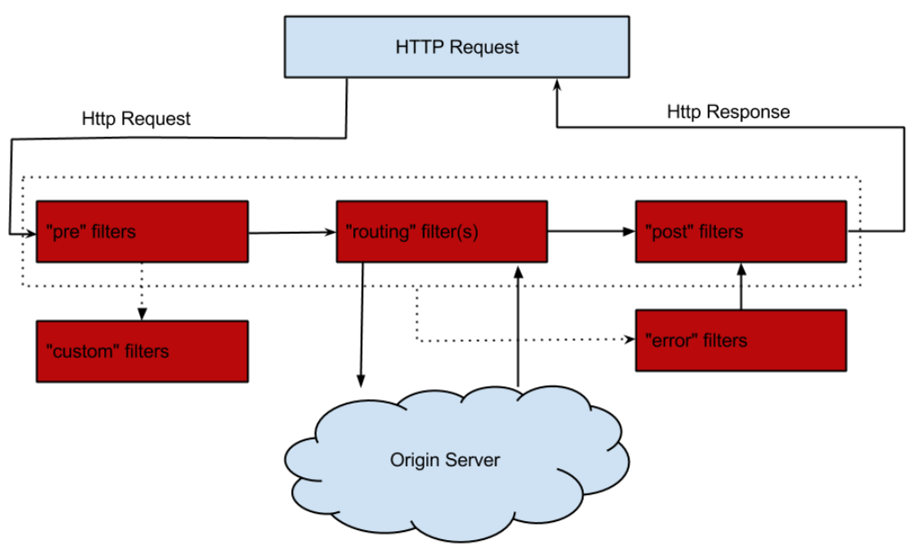

从本章开始，我将讲解Spring Cloud Netflix中的另一个组件——Zuul。Zuul就是微服务架构中的网关（gateway），我在《分布式系统从理论到实战》系列中已经对微服务架构中的API网关做了全面介绍，并且在实战篇中也对OpenResty这个网关进行了应用。
本章，我将首先回顾Zuul的基本使用，接着会对Zuul的基本原理做一个讲解，为后续章节讲解Zuul的核心源码做铺垫。
建议读者先去阅读Spring Cloud的官方文档：https://docs.spring.io/spring-cloud-netflix/docs/2.2.5.RELEASE/reference/html/#router-and-filter-zuul，然后再来看本系列的内容。
我们先来看下如何使用Spring Cloud Netflix Zuul，Zuul使用的核心就是各种路由规则的配置。首先，我们需要引入spring-cloud-starter-netflix-zuul这个maven依赖。
首先，我这里创建了一个zuul-gateway工程，引入Maven依赖：
<project xmlns="http://maven.apache.org/POM/4.0.0" xmlns:xsi="http://www.w3.org/2001/XMLSchema-instance"
xsi:schemaLocation="http://maven.apache.org/POM/4.0.0 http://maven.apache.org/xsd/maven-4.0.0.xsd">
<modelVersion>4.0.0</modelVersion>
<groupId>com.tpvlog</groupId>
<artifactId>zuul-gateway</artifactId>
<version>0.0.1-SNAPSHOT</version>
<packaging>jar</packaging>
<name>zuul-gateway</name>
<url>http://maven.apache.org</url>
<properties>
<project.build.sourceEncoding>UTF-8</project.build.sourceEncoding>
</properties>
<parent>
<groupId>org.springframework.boot</groupId>
<artifactId>spring-boot-starter-parent</artifactId>
<version>2.3.1.RELEASE</version>
</parent>
<dependencyManagement>
<dependencies>
<dependency>
<groupId>org.springframework.cloud</groupId>
<artifactId>spring-cloud-dependencies</artifactId>
<version>Hoxton.SR8</version>
<type>pom</type>
<scope>import</scope>
</dependency>
</dependencies>
</dependencyManagement>
<dependencies>
<dependency>
<groupId>org.springframework.cloud</groupId>
<artifactId>spring-cloud-starter-config</artifactId>
</dependency>
<dependency>
<groupId>org.springframework.cloud</groupId>
<artifactId>spring-cloud-starter-netflix-zuul</artifactId>
</dependency>
<dependency>
<groupId>org.springframework.cloud</groupId>
<artifactId>spring-cloud-starter-netflix-eureka-client</artifactId>
</dependency>
</dependencies>
</project>
启动类中需要加上@EnableZuulProxy注解：
@SpringBootApplication
@EnableZuulProxy
@EnableEurekaClient
public class ZuulGatewayApplication {
public static void main(String[] args) {
SpringApplication.run(ZuulGatewayApplication.class, args);
}
}
需要在配置文件application.yml中配置Zuul的路由：
server:
port: 9080
spring:
application:
name: zuul-gateway
zuul:
routes:
MyService:
path: /demo/**
ribbon:
eager-load:
enabled: true
eureka:
instance:
hostname: localhost
client:
serviceUrl:
defaultZone: http://localhost:8761/eureka/
register-with-eureka: false
上述配置中，Zuul网关本身启动在9080端口，对于http://localhost:9080/demo/sayHello这类请求，会全部会转发给服务MyService的/sayHello处理。
Spring Cloud Netflix Zuul提供了多种路由方式，可以单独使用，也可以和Ribbon、Eureka结合使用。
我们先来看下最基本的简单路由方式，本质是通过SimpleHostRoutingFilter来实现的。一把的使用方式如下：
zuul:
routes:
demo:
path: /ServiceB/**
url: http://localhost:9090/ServiceB
上面这个配置的意思是，对于http://xxx/ServiceB/**之类的请求，最终全部会交给http://localhost:9090/ServiceB处理。
这种模式下，可以配置连接到目标主机的最大http连接数和初始连接数：
zuul.host.maxTotalConnections：配置连接到目标主机的最大http连接数，是用来配置http连接池的，默认值200；zuul.host.maxPerRouteConnections：每个主机的初始连接数，默认值20。Zuul也提供了跳转路由，本质由SendForwardFilter负责进行请求转发。配置方式如下：
zuul:
routes:
demo:
path: /test/**
url: forward: /gateway/sayHello
上面这个配置的意思是，对于http://xxx/test/**之类的请求，最终全部通过请求转发，转发到http://xxx/gateway/sayHello处理。
顾名思义，就是将Zuul与Ribbon结合使用。通过使用ribbon来实现负载均衡：
zuul:
routes:
ServiceB:
path: /demo/**
上面的配置的意思是，对于http://xxx/demo/**之类的请求，Zuul会全部转发给服务ServiceB处理，Ribbon会通过负载均衡策略，从ServiceB的可用服务地址中选择一个，并组装成最终的URL。
我们也可以自定义路由规则：
@Configuration
public class MyRouteRuleConfig {
@Bean
public PatternServiceRouteMapper patternServiceRouteMapper() {
return new PatternServiceRouteMapper(“(zuul)-(?<test>.+)-(service)”, “${test}/**”);
}
}
上面定义了一个配置Bean，并注入一个PatternServiceRouteMapper对象，该对象通过正则表达式对URL-服务进行匹配映射。
Zuul的核心原理就是利用了设计模式中的责任链模式。Zuul定义了一系列的过滤器，这些过滤器会拦截Http Request/Response请求，用Zuul官方的一张图可以表述整个流程：

Zuul一共有四种类型的过滤器：
pre过滤器：在请求被路由之前调用。我们可利用pre过滤器实现身份验证、在集群中选择请求的微服务、记录调试信息等；
routing过滤器：用于将请求发送到指定的后端服务。这种过滤器用于构建发送后端服务的请求，一般内嵌使用Apache HttpClient或Netfilx Ribbon；
post过滤器：在完成后端服务的调用后执行。这种过滤器可用来为响应添加标准的HTTP Header、收集统计信息和指标、将响应从微服务发送给客户端等；
error过滤器：整个执行流程中，发生错误时执行该过滤器；
自定义过滤器：除了默认的过滤器类型，Zuul还允许我们创建自定义的过滤器类型。例如，我们可以定制一种STATIC类型的过滤器，直接在Zuul中生成响应，而不将请求转发到后端服务。
每一个过滤器都属于上述四种类型之一，同一种类型的filters组成Pipeline，filterOrder()返回值是该filter的优先级，优先级的绝对值越大，优先级越高，就越先执行。
我们可以自定义过滤器并指定其优先级：
public class MyFilter extends ZuulFilter {
// 是否执行过滤器
public boolean shouldFilter() {
return true;
}
// 具体执行逻辑
publici Object run() {
System.out.println(“执行过滤器”);
return null;
}
// 设置Filter类型，这里是Route过滤器
public String filterType() {
return FilterConstants.ROUTE_TYPE;
}
// 设置优先级
public int filterOrder() {
return 1;
}
}
@Configuration
public class FilterConfig {
@Bean
public MyFilter myFilter() {
return new MyFilter();
}
}
本章，我讲解了Zuul的基本使用及其原理。Zuul的核心是一系列的过滤器（Filter）。关于Zuul的使用，最佳学习方式还是在实战中去应用，同时结合Netflix官方和Spring Cloud的文档进行学习。
从下一章开始，我将分析Spring Cloud Netflix Zuul的底层源码。